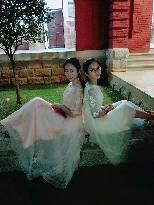
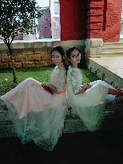

- 一起拖延
- 一起逃跑操、逃各种讲座
- 一起上课了还在教室外吃双皮奶
- 一起在教室大屏看了《悲伤逆流成河》
- 一起去过很多次海边，
- 一起在两三点压过马路吃烧烤清补凉
- 一起早起去看日出
- 一起在高考成绩出来前一天抱团（围观）打麻将到凌晨....
过去的故事很多很多，希望今后的日子，言尽意存，花谢人在。未完待续，故事还有很长....
凡是都有偶然的凑巧，结果却又如宿命的必然。睿颖会有光明的未来，会有更精彩的生活。你一定会过的很好，你不准不过得越来越好。
关于未来，我需要为睿颖这样有想法又不拧巴、温柔又勇敢的人祝愿什么呢？
或者说，我有什么值得为她担心的呢？
思来想去，那就愿你永远效忠自己，在热爱的世界闪闪发光。
往后的生命里，一定会再有激动、疲惫、绝望与欣喜，但我希望无论是何种时光，都还能有你在身旁。因为回想起来，和你在一起的时间都很快乐。


还有很多小细节...


 

我在高中的大多欢欣，她都在一旁共同品尝。
在班级的大多数活动里，凡有我必有你。
一起策划给倩姐的惊喜...
“想和你一起出现在舞台上”，于是一起出演课本剧....


和蔡睿颖同学值得记录的共同回忆太多，不是一时能表达尽的。那就从一个个小细节里说吧。
还记得那年寒假，你开车送我回家，我大年初一还去了你的老家....


我们的故事从哪里开始说起好呢？我想不起我们是怎么认识的了。你是个不会主动的人，而我恰好也是，你说想要一个人的座位，我说我也是！但是之后就没想到分班后我们竟然成了同桌....
第一页反面